MVP Rankings since 2000
Gentlemen, welcome to the definitive rankings of the best NFL MVPs this century. We’ve compared each winning season with the other MVPs and with the competition that year to arrive at the indisputable tiers below. We’ll also point out where another player probably should have won. EPA and touchdowns are the guiding lights here. This is a look back at how production lined up with MVP voting, not a prediction model.
There have been 27 MVP winners across the 26 seasons from 2000 through 2025 because Manning and McNair shared the award in 2003. Remove the four running backs and that leaves 23 quarterback winners. Sixteen led their season in total quarterback EPA, and 21 finished in the top three. Sixteen led in EPA per play, and 20 finished in the top three. Twelve led in total touchdowns accounted for, and 18 finished in the top three.
This table shows the percentage of times that an MVP QB finished either #1 or Top Three in each statistic.
| Metric | First | Top three |
|---|---|---|
| Total quarterback EPA | 16/23 (70%) | 21/23 (91%) |
| Quarterback EPA/play | 16/23 (70%) | 20/23 (87%) |
| Total TD accounted for | 12/23 (52%) | 18/23 (78%) |
| Passing yards | 8/23 (35%) | 12/23 (52%) |
That’s 70% of MVP quarterbacks finishing first in total EPA and 91% finishing in the top three. These are regular-season numbers throughout. The methodology at the bottom explains the play filters and touchdown definition.
The other key requirement is team success. Of the 27 winning player-seasons, 17 came from a No. 1 seed and 20 from a top-two seed. Stafford’s 2025 Rams were a No. 5 seed, so he joins the smaller group that won without a first-round bye or its modern equivalent.
Passing yards comes up constantly, but only 52% of these quarterback MVPs finished in the top three in passing yards. Only 2 of the ten biggest passing-yardage seasons since 2000 won MVP, compared with 8 of the top ten EPA-per-play seasons. That doesn’t settle any individual race. It does explain why we care so much about efficiency.
Winning, touchdowns and efficiency. That’s the recipe. The charts compare quarterback MVPs using EPA per play and passing, rushing and receiving touchdowns combined. Running backs get their own discussion because their play-level EPA is not interchangeable with a quarterback’s.
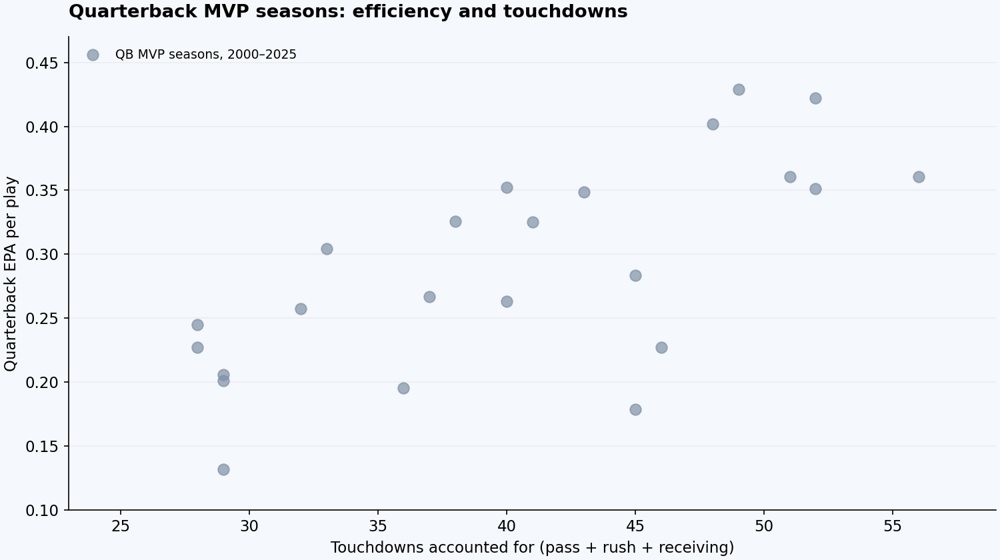
View chart values
| Quarterback | Season | EPA/play | EPA/play league rank | Total TD | Total TD league rank |
|---|---|---|---|---|---|
| Kurt Warner | 2001 | 0.195 | 1 | 36 | 2 |
| Rich Gannon | 2002 | 0.201 | 3 | 29 | T-1 |
| Peyton Manning | 2003 | 0.206 | 2 | 29 | T-2 |
| Steve McNair | 2003 | 0.245 | 1 | 28 | T-4 |
| Peyton Manning | 2004 | 0.429 | 1 | 49 | 1 |
| Tom Brady | 2007 | 0.422 | 1 | 52 | 1 |
| Peyton Manning | 2008 | 0.227 | 3 | 28 | 5 |
| Peyton Manning | 2009 | 0.304 | 2 | 33 | T-3 |
| Tom Brady | 2010 | 0.267 | 1 | 37 | 1 |
| Aaron Rodgers | 2011 | 0.402 | 1 | 48 | 1 |
| Peyton Manning | 2013 | 0.361 | 1 | 56 | 1 |
| Aaron Rodgers | 2014 | 0.352 | 1 | 40 | 2 |
| Cam Newton | 2015 | 0.179 | 6 | 45 | 1 |
| Matt Ryan | 2016 | 0.326 | 1 | 38 | 3 |
| Tom Brady | 2017 | 0.258 | 1 | 32 | 3 |
| Patrick Mahomes | 2018 | 0.352 | 1 | 52 | 1 |
| Lamar Jackson | 2019 | 0.349 | 1 | 43 | 1 |
| Aaron Rodgers | 2020 | 0.360 | 1 | 51 | 1 |
| Aaron Rodgers | 2021 | 0.263 | 1 | 40 | 5 |
| Patrick Mahomes | 2022 | 0.283 | 1 | 45 | 1 |
| Lamar Jackson | 2023 | 0.132 | 7 | 29 | T-7 |
| Josh Allen | 2024 | 0.325 | 1 | 41 | 4 |
| Matthew Stafford | 2025 | 0.227 | 5 | 46 | 1 |
Tier Five: Running backs and the Anomaly
27. Lamar Jackson - 2023
This season is the Anomaly. Strip the graph down to the quarterback MVPs and look at where Lamar’s 2023 season sits.
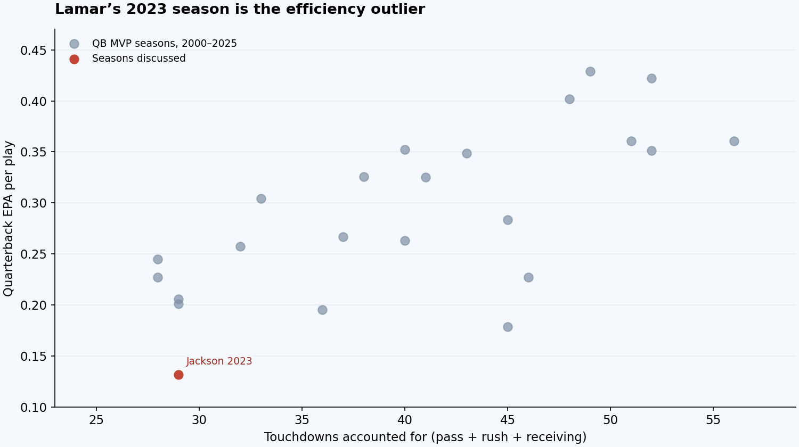
View highlighted seasons and values
| Quarterback | Season | EPA/play | EPA/play league rank | Total TD | Total TD league rank |
|---|---|---|---|---|---|
| Lamar Jackson | 2023 | 0.132 | 7 | 29 | T-7 |
Lamar has the lowest EPA per play of any quarterback MVP winner in this group: 0.132. He ranked sixth in total quarterback EPA and seventh per play in 2023. A pig with hair, by the standards of this list. So why did he win?
There wasn’t a runaway statistical candidate. The vote itself wasn’t close: Lamar received 49 of the 50 first-place votes. He played arguably his two best games of the season in December, and we think that finish helped his case. More than that, though, he played for the best team. The Ravens were 13-3 and had secured the 1st seed when Lamar sat Week 18 and they lost to the Steelers. Our issue with that logic is that Baltimore’s defense carried them. The Ravens defense ranked first in points allowed per game and second in defensive EPA per play under the calculation used here. They were an absolute defensive juggernaut and allowed Lamar to pilot a good but not elite offense. We would’ve voted at least Dak Prescott and Josh Allen ahead of him. See the chart below to compare the 2023 MVP candidates to the past MVP winners, and you’ll understand why we believe this to be a fraudulent MVP. The 2023 candidates are highlighted in red. We’d love to go into absolute detail about why the other candidates were better, but we’ll save that for another time.
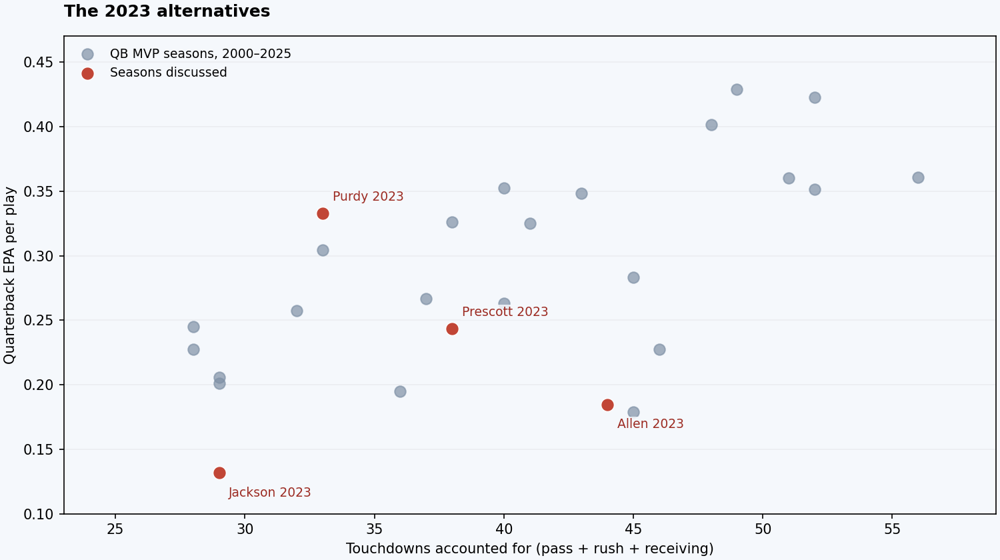
View highlighted seasons and values
| Quarterback | Season | EPA/play | EPA/play league rank | Total TD | Total TD league rank |
|---|---|---|---|---|---|
| Lamar Jackson | 2023 | 0.132 | 7 | 29 | T-7 |
| Dak Prescott | 2023 | 0.243 | 2 | 38 | T-2 |
| Josh Allen | 2023 | 0.185 | 3 | 44 | 1 |
| Brock Purdy | 2023 | 0.333 | 1 | 33 | 5 |
WHO SHOULD’VE WON · 2023Dak Prescott
26. Shaun Alexander - 2005
We’re not going to lie. Shaun Alexander had an awesome year for a really great team that made the Super Bowl. In case you haven’t noticed, we’re big on stats. However, in this case, we’d like to argue that Shaun Alexander was at least to some degree a product of his environment. He was running behind two 1st-team All-Pro offensive linemen in Steve Hutchinson and Walter Jones, who both happened to be future Hall of Famers, and his fullback Mack Strong also made 1st-team All-Pro. Some might counter that we’re just too young to fully appreciate his greatness. Maybe they’re right, but we don’t really care. Nobody has ever been like, “Hey, let’s watch Shaun Alexander highlights.” He was a really good player on a really good team, but this was one of the weaker MVP seasons this century. By the way, we feel vindicated that Alexander’s career hasn’t earned him the same lasting reputation as the quarterbacks around him. The MVP voting this year was Alexander - 19, Peyton - 13, Brady - 10. Peyton probably should’ve won, seeing as he piloted the Colts to a 14-2 record and had the 4th highest EPA per play of any QB this century (eight of the top ten won MVP), but it would’ve been a three-peat MVP for him, and he had limited playoff success at the time, so we suspect voter fatigue played a part. That’s our read of the race, not something the vote totals can prove.
WHO SHOULD’VE WON · 2005Peyton “The Sheriff” Manning
25. Adrian Peterson - 2012
We’re not partial to running backs, but we’ve got to admit this was a damn impressive season by AP. Peterson had surgery to repair his torn ACL in December 2011 and was back for the 2012 season. Peterson ran for the 2nd most yards in a season in the history of the league, behind only the immortal Eric Dickerson. He threw a disgustingly mediocre Vikings team on his back and carried them to the playoffs. Peterson piled up 2,314 yards from scrimmage. Credit to him. We think if you want to gripe about this one, it’s probably because you think Peyton or Brady deserved it. Both would’ve been perfectly good MVPs this year (see the chart below), but Peterson ran for 651 yards in his last four games to lead Minnesota to four straight wins and a playoff berth.
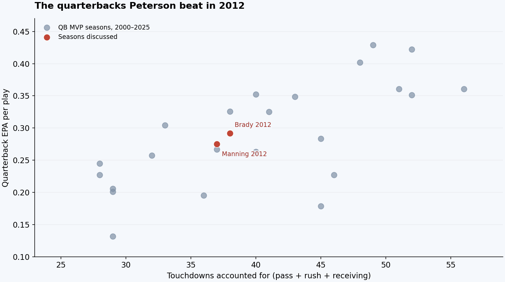
View highlighted seasons and values
| Quarterback | Season | EPA/play | EPA/play league rank | Total TD | Total TD league rank |
|---|---|---|---|---|---|
| Tom Brady | 2012 | 0.292 | 1 | 38 | 3 |
| Peyton Manning | 2012 | 0.275 | 2 | 37 | 4 |
WHO SHOULD’VE WON · 2012Tom Brady
24. LaDainian Tomlinson - 2006
Tomlinson scored an NFL-record 31 touchdowns: 28 rushing and three receiving. Add his two touchdown passes and he accounted for 33. He was the engine of a 14-2 team that scored the most points in the league. Philip Rivers was excellent, but this was his first year starting, and there was no doubt the offense ran through Tomlinson. Gen Z will never understand just how good prime Tomlinson was. If you think running backs are worthless and should never win MVP, then Peyton Manning was the obvious choice this year. This was the 4th consecutive season Peyton Manning led all quarterbacks in Total EPA and the 3rd consecutive season he led in EPA per play.
WHO SHOULD’VE WON · 2006Peyton Manning
23. Marshall Faulk - 2000
For all our hatred of running backs, we have nothing but the utmost respect for Marshall Faulk’s 2000 season. Faulk had nearly 2200 yards from scrimmage and 26 touchdowns for a Rams team that missed Kurt Warner for five games. Faulk helped keep the offense afloat for the defending Super Bowl champs while Kurt Warner was out. You could definitely make a case for Peyton Manning (kind of a theme) or Daunte Culpepper this year, but we have no issue with Faulk taking this MVP. This was the 3rd consecutive season Faulk had over 2100 yards from scrimmage, and it’s hard to overstate just how integral he was to the Greatest Show on Turf.
WHO SHOULD’VE WON · 2000Marshall Faulk
Now that we’ve concluded the running back section, we must say it’s a challenge to rank them against quarterbacks. There’s no doubt Faulk or Tomlinson were far more memorable than a few of the QBs ahead of them, but we have a hard time arguing a running back is more valuable than a very good quarterback. Unless, of course, you are Lamar Jackson in 2023.
Tier Four: Mid MVP Seasons
22. Steve McNair - 2003
21. Peyton Manning - 2003
In hindsight, some might look and think how did McNair split MVP with Peyton Manning this year? But the truth is it was a fairly close call. See the table below for the relevant stats.
| Quarterback | Season | Total EPA | EPA/play | EPA/play league rank | Total TD | Total TD league rank | Pass yards | INT | Team wins | Team PPG | Team PA/G | Off. EPA rank | Def. EPA rank |
|---|---|---|---|---|---|---|---|---|---|---|---|---|---|
| Steve McNair | 2003 | 113.6 | 0.245 | 1 | 28 | T-4 | 3,215 | 7 | 12 | 27.2 | 20.2 | 7 | 8 |
| Peyton Manning | 2003 | 129.7 | 0.206 | 2 | 29 | T-2 | 4,267 | 10 | 12 | 27.9 | 21.0 | 2 | 19 |
We would lean Peyton but then again, we might be a bit biased looking at the totality of their careers. We can hardly claim to have crunched the 2003 Steve McNair film. In any event, both McNair and Manning in 2003 were among the weaker MVP winners we’ve seen this century. Neither eclipsed 30 total touchdowns, a benchmark three other quarterback MVP winners in this group did not reach: Gannon in 2002, Manning in 2008 and Jackson in 2023, and neither secured a top 2 seed in the AFC. Both finished 12-4 behind the Patriots and Chiefs. Overall, 2003 was a middling MVP year.
WHO SHOULD’VE WON · 2003Peyton Manning
20. Rich Gannon - 2002
Rich Gannon is severely underrated. For three straight seasons from 2000-2002, he finished in the top three in total EPA in the available play-by-play. The 2000 file is missing two games, so that first season comes with a data caveat. And in those three years, Gannon led the Raiders to a Super Bowl appearance, Conference Championship, and the infamous divisional round Tuck Rule game. What a monster. Specifically in 2002, Gannon was 1st in the league in Total EPA and led the league in passing yards with 4479. He piloted the Raiders to the 2nd best scoring offense in the league and the No. 1 seed in the AFC playoffs. They advanced to the Super Bowl and succumbed to Jon Gruden’s Tampa Bay Buccaneers. Many historic scholars have argued that Gruden’s inside knowledge of the Raiders (he was their coach from 1998-2001) played a decisive factor in that Super Bowl result. Brett Favre also had a good case as MVP this year, but his turnovers made him rather inefficient. We’d also like to give a shoutout to Chad Pennington for a great year. Pennington took the Jets to the divisional round and was 1st in the league in EPA per play. Solid but unspectacular MVP race this year.
WHO SHOULD’VE WON · 2002Rich Gannon
19. Peyton Manning - 2008
In case you haven’t noticed, Peyton Manning was pretty fucking nasty in the 2000s. Peyton was a worthy MVP, but we’re not convinced he was the best quarterback in the league that season. Both Drew Brees and Philip Rivers had elite seasons, but their 8-8 records didn’t help their MVP cases. Rivers received two votes while Peyton won 64% of the vote. For fun, though, see the comparison below.
| Quarterback | Season | Total EPA | EPA/play | EPA/play league rank | Total TD | Total TD league rank | Pass yards | INT | Team wins | Team PPG | Team PA/G | Off. EPA rank | Def. EPA rank |
|---|---|---|---|---|---|---|---|---|---|---|---|---|---|
| Peyton Manning | 2008 | 135.9 | 0.227 | 3 | 28 | 5 | 4,002 | 12 | 12 | 23.6 | 18.6 | 3 | 12 |
| Drew Brees | 2008 | 155.3 | 0.230 | 2 | 34 | T-1 | 5,069 | 17 | 8 | 28.9 | 24.6 | 2 | 24 |
| Philip Rivers | 2008 | 145.4 | 0.264 | 1 | 34 | T-1 | 4,009 | 11 | 8 | 27.4 | 21.7 | 1 | 21 |
Brees had by far the most yards and attempted the most passes of the three. New Orleans also had the weakest defense of these three teams by the EPA calculation here, although that alone doesn’t tell us how much of his yardage came from game script. It’s quite close between the three and we would choose Philip Rivers as having the best season by a hair. But as we know, team success matters deeply to the MVP, and both Rivers and Brees were on 8-8 teams while Peyton quarterbacked a 12-4 team. Peyton just had a knack for pulling out the close games this year. After starting 3-4, the Colts reeled off nine straight wins. Peyton finished with six game-winning drives in 2008, which led the league. He was a worthy MVP. We would like to give a shoutout to Chad Pennington again. He didn’t have the numbers, but he finished top five in EPA per play and led the Dolphins to their only division title since 2000.
WHO SHOULD’VE WON · 2008Peyton Manning
18. Kurt Warner - 2001
This was the year. The Rams offense was so dominant Warner and Marshall Faulk finished as the top two in MVP votes, with Warner narrowly edging Faulk 21.5-17.5 after Faulk won in 2000. The Rams went 14-2, scoring 503 points, the culmination of an unbelievable three-year offensive run. Warner finished 1st in the league in Total EPA, 1st in EPA per play, and 2nd in total touchdowns behind Jeff Garcia. Warner more than deserved MVP with his 4,830 passing yards and 36 TDs. This was his 2nd MVP in three years, and the Rams were flying high entering Super Bowl XXXVI. The Rams outgained the Pats by 160 yards as Warner threw for 365 yards with one passing touchdown and one rushing touchdown, but three turnovers and a missed field goal doomed the Rams offense early, and they entered the 4th quarter down 17-3. Two 4th-quarter touchdown drives weren’t enough as Tom Brady led the Pats down the field for the winning field goal. The first-half pick-six by Warner was particularly brutal for the Rams because the Pats offense could not move the ball for much of the game. This game is all that lay between Warner and potential top ten all-time discussions. Through 2025, only Brady, Peyton Manning, Joe Montana and Patrick Mahomes have at least two Super Bowl wins as a starting quarterback and two AP regular-season MVPs. Warner could’ve been in that group if he won Super Bowl XXXVI against the Pats. Bit of a rabbit hole there, but had to remind you of how awesome Kurt Warner was.
WHO SHOULD’VE WON · 2001Kurt Warner
Tier Three: Good MVP Seasons
17. Cam Newton - 2015
This was peak Cam. He was dabbing, he was talking shit, Mickey Mouse crew probably had a closet full of t-shirts with his face on them. From a football and cultural standpoint, it never got better than this for Cam. Having said that, there are some holes here that prevent him from being ranked higher. He was only sixth in EPA per play, which is the lowest for any MVP QB in these rankings other than Lamar Jackson in 2023. He was fifth in total EPA, behind Carson Palmer, Russell Wilson, Andy Dalton and Tom Brady (you can ignore Dalton; the Bengals offense was awesome this year, and it made Dalton’s efficiency elite). So he wasn’t head and shoulders the best player in the league. Some have argued that he was carried by an incredible defense. Carolina’s defense was second in defensive EPA per play and sixth in points allowed per game. But their offense was really fucking good. Carolina was 1st in the league in points per game and fifth in offensive EPA per play. Wilson and Palmer also had top ten defenses behind them, while Brady’s ranked 11th, so it feels wrong to hold that against Cam. Brady was awesome every year in the 2010s, but nothing about this year stood out, so he can’t be the pick. We’d have voted for Russell Wilson if not Cam. Cam’s strong close to the season and dominant 15-1 record really sealed the deal, though and there wasn’t much of an argument for anyone else at the time.
WHO SHOULD’VE WON · 2015Cam Newton
16. Matthew Stafford, Los Angeles Rams, 2025
Stafford finally got his MVP, and he had to fight like hell for it. He finished with 366 points and 24 first-place votes. Drake Maye finished with 361 and 23. Josh Allen was third with 91 points and two first-place votes. Five points separated the winner from the runner-up. Whatever you thought of the result, this was not some runaway season where one guy left the rest of the league behind. Full AP voting results.
The case for Stafford starts with the raw production. He led the NFL with 4,707 passing yards and 46 passing touchdowns while throwing just eight interceptions. The Rams scored a league-high 518 points, went 12-5 and finished fifth in the NFC playoff field. Forty-six touchdowns is a monster number. Stafford threw 15 more than Maye with the same number of interceptions. He also took 23 sacks to Maye's 47. Sack avoidance is part of playing quarterback, and that's a real advantage for Stafford.
| Quarterback | Total EPA | EPA/play | EPA/play league rank | Total TD | Total TD league rank | Pass yards | Pass TD | Rush yards | Rush TD | INT | Sacks |
|---|---|---|---|---|---|---|---|---|---|---|---|
| Matthew Stafford | 150.5 | 0.227 | 5 | 46 | 1 | 4,707 | 46 | 1 | 0 | 8 | 23 |
| Drake Maye | 201.0 | 0.307 | 1 | 35 | 4 | 4,394 | 31 | 450 | 4 | 8 | 47 |
| Josh Allen | 145.0 | 0.235 | 4 | 39 | 2 | 3,668 | 25 | 579 | 14 | 10 | 40 |
But Maye's argument goes a lot deeper than the Patriots winning two more games. He completed 72.0% of his passes to Stafford's 65.0%, averaged 8.9 yards per attempt to Stafford's 7.9 and posted a 113.5 passer rating to Stafford's 109.2. Stafford needed 105 more attempts to throw for 313 more yards. Maye also added 450 rushing yards and four touchdowns. Maye led the NFL in total quarterback EPA (201.0) and EPA per play (0.307). Stafford ranked second in total EPA (150.5) and fifth per play (0.227). Stafford had the bigger touchdown total. Maye was more efficient across several measures. That's why treating this like an obvious decision never made much sense.
The context cuts both ways. Stafford had Sean McVay calling plays, Puka Nacua catching 129 passes for 1,715 yards and Davante Adams catching 14 touchdowns. Maye's leading receiver was Stefon Diggs with 1,013 yards, followed by Hunter Henry with 768 and Kayshon Boutte with 551. We'd take the Rams' receiving group without thinking twice. But we'd also take Maye's schedule. New England's opponents finished with a .391 winning percentage compared with .526 for the Rams' opponents. That's a measure of overall opponent strength, not a direct ranking of the defenses they faced, but it is a substantial difference. Stafford had better weapons. Maye had the easier slate. Both were worthy candidates.
Allen deserves a passing mention. He was really good again, accounting for 39 touchdowns and finishing fourth in both total EPA and EPA per play. But he was outplayed by a quarterback in his own division. Maye had the stronger season, and Allen was more of a distant third than a real contender to win.
WHO SHOULD’VE WON · 2025Matthew Stafford
15. Tom Brady - 2017
This was just a good, clean MVP year. Nothing spectacular but no real chirps either. Brady ranked 1st in Total EPA, first in EPA per play, first in passing yards, and 3rd in total touchdowns. He led the Patriots to 28.6 points per game, which ranked 2nd in the league, while having to deal with a defense that ranked 24th in the league in EPA per play. A year after fielding a pretty damn good defense (sixth in defensive EPA per play), the Patriots fell sharply by that measure, although they still finished fifth in points allowed. Brady kept them winning at an elite level. The Patriots went 13-3 to get the 1st seed in the AFC. They eventually fell 41-33 in the Super Bowl to the Eagles because Matt Patricia had Kyle Van Noy try to guard Zach Ertz on an island (Van Noy would’ve had better luck clearing out the Golden Corral buffet). This was a good and very worthy MVP season, especially in the context of how bad the Patriots defense was, but it was hardly an all-time great year statistically. The main argument against Brady this year was the awesome play of Carson Wentz. Wentz led the Eagles to an 11-2 start while dazzling with his 33 touchdowns and only 7 picks. Wentz ranked second in EPA per play but missed the last three games after tearing his ACL against the Rams. The Eagles went on to win the Super Bowl without him, and his great 2017 is lost to history. For the record, we believe Wentz would have and should have won if he was healthy for the full season.
WHO SHOULD’VE WON · 2017Tom Brady
14. Peyton Manning - 2009
This was the best MVP race of the century. We had multiple deserving candidates all playing at or near the peak of their powers for awesome teams. Peyton won this one in a landslide vote with 39.5 of the possible 50 first-place votes, but we think the actual margins between the players were razor-thin this year.
If you’ll remember our section from 2008, Manning, Brees and Rivers were the three quarterbacks compared in that section, but Rivers and Brees played for .500 teams. That was not the case this year. All three quarterbacked teams winning at least 13 games. And then Brett Favre resurrected his career after a tough ending with the Jets. Tom Brady and Aaron Rodgers both also had awesome seasons but were a cut below these top four.
| Quarterback | Season | Total EPA | EPA/play | EPA/play league rank | Total TD | Total TD league rank | Pass yards | INT | Team wins | Team PPG | Team PA/G | Off. EPA rank | Def. EPA rank |
|---|---|---|---|---|---|---|---|---|---|---|---|---|---|
| Peyton Manning | 2009 | 185.9 | 0.304 | 2 | 33 | T-3 | 4,500 | 16 | 14 | 26.0 | 19.2 | 4 | 13 |
| Drew Brees | 2009 | 161.7 | 0.286 | 3 | 36 | 1 | 4,388 | 11 | 13 | 31.9 | 21.3 | 3 | 9 |
| Philip Rivers | 2009 | 184.4 | 0.333 | 1 | 29 | T-5 | 4,254 | 9 | 13 | 28.4 | 20.0 | 1 | 21 |
| Brett Favre | 2009 | 133.5 | 0.223 | 6 | 33 | T-3 | 4,202 | 7 | 12 | 29.4 | 19.5 | 7 | 6 |
As good as Favre was the decision comes down to the other 3. Peyton carried the Colts to a 14-0 start before Jim Caldwell made the decision to sit him against the Jets and forfeit their shot at a perfect season. Brees also sat in the last game because the Saints had the 1st seed locked up. As good as Brees and Rivers were, we can’t look back and say the voters got it wrong here. It sucks because neither Brees nor Rivers won an MVP in their career, and both had a couple very deserving seasons.
For fun, let’s plot Brees and Rivers best seasons against the MVP winners and see how they looked. The chart below shows the five highest-total-EPA seasons each for Brees and Rivers against the actual MVP-winning QBs this century. As you can see, they had some elite seasons but either through not enough team help or bad luck in being beaten out by someone better, neither won an MVP in their career.
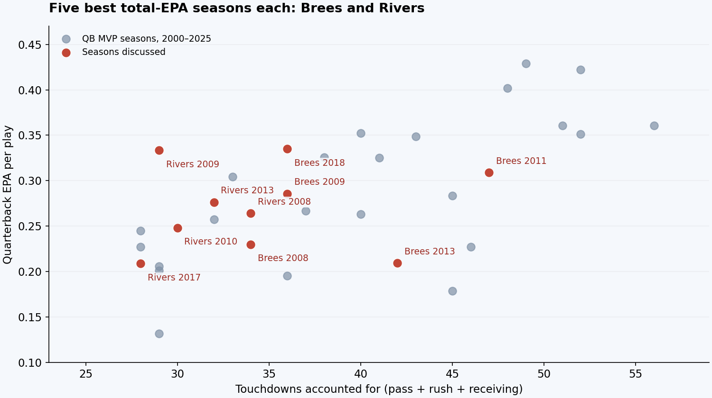
View highlighted seasons and values
| Quarterback | Season | EPA/play | EPA/play league rank | Total TD | Total TD league rank |
|---|---|---|---|---|---|
| Drew Brees | 2011 | 0.309 | 2 | 47 | 2 |
| Drew Brees | 2018 | 0.335 | 2 | 36 | 5 |
| Drew Brees | 2009 | 0.286 | 3 | 36 | 1 |
| Drew Brees | 2008 | 0.230 | 2 | 34 | T-1 |
| Drew Brees | 2013 | 0.209 | 5 | 42 | 2 |
| Philip Rivers | 2009 | 0.333 | 1 | 29 | T-5 |
| Philip Rivers | 2013 | 0.276 | 4 | 32 | 4 |
| Philip Rivers | 2010 | 0.248 | 2 | 30 | T-6 |
| Philip Rivers | 2008 | 0.264 | 1 | 34 | T-1 |
| Philip Rivers | 2017 | 0.209 | 3 | 28 | T-7 |
Having said all of that, Peyton was a more than worthy winner. Credit him.
WHO SHOULD’VE WON · 2009Peyton Manning
13. Tom Brady- 2010
This one was pretty cut and dry. The Patriots went 14-2 and led the league in scoring and offensive EPA per play. Brady was 2nd in Total EPA behind Philip Rivers, 1st in EPA per play, and 1st in total touchdowns. It's hard to lose the MVP if you pull that off. It should be mentioned that Philip Rivers had an impressive season this year, and Michael Vick popped off for the Eagles. Neither received a vote in the final MVP balloting, which Brady swept 50-0. The main thing to remember here is, even after this incredible regular season and a 45-3 thrashing of the Jets weeks earlier, the Patriots bowed out in the divisional round as the Jets got their revenge.
WHO SHOULD’VE WON · 2010Tom Brady
12. Matt Ryan- 2016
Let’s start by discussing Tom Brady here. Brady was so ruthlessly efficient this year, he finished 2nd in MVP voting while being suspended the first four games of the season due to Deflategate (a Mickey Mouse scandal brought up by a team that lost 45-7). Brady was 2nd in EPA per play behind Matt Ryan and had 28 touchdowns to 2 interceptions while leading the Patriots to an 11-1 record in games he played. He was unbelievable. However, it’s hard to state just how good this Falcons offense was. The Falcons led the league in offensive EPA per play and scored 33.8 points per game. Kyle Shanahan and Matt Ryan were at an all-time great level this year, and it nearly won the Falcons the Super Bowl. Matt Ryan (he’ll always be referred to by his full name, never just “Matt” or “Ryan”) finished 1st in Total EPA, 1st in EPA per play, and 3rd in total touchdowns. It’s one of the more interesting MVP seasons this century because of just how much of an outlier it is relative to the rest of his career. As you can see from the graph below, Matt Ryan had a couple of other really great years, but the combination of efficiency and touchdowns in 2016 was a career outlier.
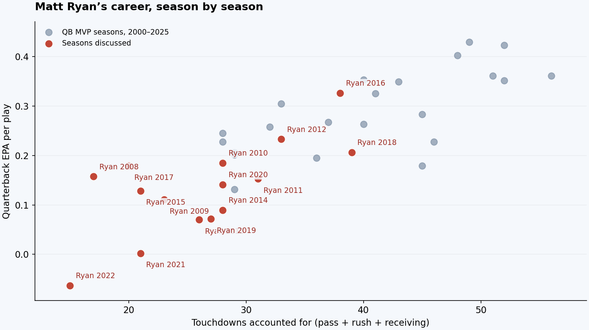
View highlighted seasons and values
| Quarterback | Season | EPA/play | EPA/play league rank | Total TD | Total TD league rank |
|---|---|---|---|---|---|
| Matt Ryan | 2016 | 0.326 | 1 | 38 | 3 |
| Matt Ryan | 2008 | 0.157 | 7 | 17 | T-16 |
| Matt Ryan | 2009 | 0.110 | 12 | 23 | 15 |
| Matt Ryan | 2010 | 0.185 | 8 | 28 | T-8 |
| Matt Ryan | 2011 | 0.152 | 8 | 31 | 8 |
| Matt Ryan | 2012 | 0.233 | 4 | 33 | 5 |
| Matt Ryan | 2013 | 0.070 | 17 | 26 | 12 |
| Matt Ryan | 2014 | 0.089 | 13 | 28 | T-12 |
| Matt Ryan | 2015 | 0.128 | 10 | 21 | T-21 |
| Matt Ryan | 2017 | 0.179 | 5 | 20 | T-19 |
| Matt Ryan | 2018 | 0.206 | 5 | 39 | T-2 |
| Matt Ryan | 2019 | 0.072 | 19 | 27 | T-11 |
| Matt Ryan | 2020 | 0.141 | 17 | 28 | 14 |
| Matt Ryan | 2021 | 0.002 | 23 | 21 | T-19 |
| Matt Ryan | 2022 | -0.063 | 29 | 15 | T-24 |
The only other player who really warrants a mention this year is Aaron Rodgers. Rodgers finished 2nd in total EPA and had 44 total touchdowns. He carried a pretty mediocre team to the NFC Championship Game.
WHO SHOULD’VE WON · 2016Matt Ryan
11. Aaron Rodgers- 2021
There were 3 viable candidates in 2021: Aaron Rodgers, Tom Brady and Patrick Mahomes. Below is a stat comparison for them.
| Quarterback | Season | Total EPA | EPA/play | EPA/play league rank | Total TD | Total TD league rank | Pass yards | INT | Team wins | Team PPG | Team PA/G | Off. EPA rank | Def. EPA rank |
|---|---|---|---|---|---|---|---|---|---|---|---|---|---|
| Aaron Rodgers | 2021 | 159.6 | 0.263 | 1 | 40 | 5 | 4,115 | 4 | 13 | 26.5 | 21.8 | 3 | 19 |
| Tom Brady | 2021 | 162.0 | 0.206 | 3 | 45 | 1 | 5,316 | 12 | 13 | 30.1 | 20.8 | 2 | 4 |
| Patrick Mahomes | 2021 | 167.7 | 0.214 | 2 | 39 | 6 | 4,839 | 13 | 12 | 28.2 | 21.4 | 1 | 22 |
These guys led the three best offenses in the league by EPA, and all would’ve been worthy MVPs. If we had to pick, Mahomes was the best player in the league this year, but at the time, it felt like this was the worst season he had played so far (an absurdly high bar), so he wasn’t given a ton of consideration. The final vote tally was Rodgers - 39, Brady - 10, and Kupp - 1. We could make an argument for Brady or Mahomes, but we have a hard time saying choosing Rodgers was wrong. All three were gifted with elite weapons between Davante Adams, Tyreek/Kelce, and Evans/Godwin, so none had a significantly greater degree of difficulty than the others. Brady easily had the best defense of the bunch. The bar for all three of these guys is so ridiculously high that 2021 wasn’t among any of their best seasons, and yet it’s still one of the better MVP seasons this century by Rodgers. We’re talking about a truly historic season of quarterbacking in 2021.
WHO SHOULD’VE WON · 2021Aaron Rodgers
Tier Two: Great MVP Seasons
10. Josh Allen- 2024
This is where we start getting into truly elite stuff. Probably one of the more contentious MVP seasons we can remember. Both Allen and Lamar Jackson had fans campaigning hard this year for MVP. The arguments between those two fan bases got pretty ugly. To be blunt, we think Lamar winning MVP in 2023 cost him in 2024. His 2024 season was incredible. Whether Lamar or Josh won, we would’ve ranked the 2024 MVP in this spot. See the chart at the beginning for how close it was between these two all-time greats. We’ll also throw Joe Burrow in the comparison below even though he went 9-8 and was never going to win.
| Quarterback | Season | Total EPA | EPA/play | EPA/play league rank | Total TD | Total TD league rank | Pass yards | INT | Team wins | Team PPG | Team PA/G | Off. EPA rank | Def. EPA rank |
|---|---|---|---|---|---|---|---|---|---|---|---|---|---|
| Josh Allen | 2024 | 206.1 | 0.325 | 1 | 41 | 4 | 3,731 | 6 | 13 | 30.9 | 21.6 | 2 | 16 |
| Lamar Jackson | 2024 | 204.1 | 0.315 | 2 | 45 | T-1 | 4,172 | 4 | 12 | 30.5 | 21.2 | 1 | 9 |
| Joe Burrow | 2024 | 151.0 | 0.195 | 8 | 45 | T-1 | 4,918 | 9 | 9 | 27.8 | 25.5 | 7 | 26 |
Burrow finished behind the other two in EPA by a significant amount. Costly turnovers were part of it. Think the fumble six against Kansas City in the 4th quarter of a one-score game. Lamar was incredible, but we think they got it right with Allen. He did more with less. He carried Buffalo to 13 wins and the second seed in the AFC. Allen finished first in total EPA and first in EPA per play. He minimized mistakes at a level he never had before in his career. Josh Allen was fucking awesome with a receiving group led by Khalil Shakir’s 821 yards. That is not the kind of supporting cast you usually associate with a season like this. Allen took the Bills to a 13-4 record and an AFC Championship game berth in a supposed “rebuilding year”. He was unbelievable. And again, that is no slight to Lamar Jackson.
WHO SHOULD’VE WON · 2024Josh Allen
9. Lamar Jackson- 2019
2019 Lamar was an incredible sophomore-year breakout. Lamar went from starting seven games as a rookie to one of the great MVP seasons all-time seemingly overnight. It was an absurd leap from his rookie season. He won unanimously, so nobody else was even really considered. He became the first quarterback to throw for 3,000 yards and rush for 1,000 in the same season. After two September losses, the Ravens rattled off 12 straight wins to finish 14-2 and claim the 1st seed in the AFC. A disastrous home loss to the Titans in the divisional round put a damper on this season for the Ravens, but there’s no doubt this is one of the great regular seasons of all time.
WHO SHOULD’VE WON · 2019Lamar Jackson
8. Aaron Rodgers- 2014
We’ve now reached the point in the rankings where only top ten all-time quarterbacks reside. Aaron Rodgers was at the peak of his powers in 2014 with a 38:5 touchdown-to- interception ratio. He won the award going away this year, with a few votes siphoned away by JJ Watt’s singular 20.5-sack and three-touchdown-catch season. Through 2025, this was Rodgers’ third-best season in both total EPA and EPA per play, behind 2011 and 2020. He led the Packers to the best offense in the NFL and displayed insane connections with Jordy Nelson and Randall Cobb. We’d run a comparison, but there’s really no need. We were robbed of a potentially all-time great Super Bowl matchup when the Packers shat the bed in the NFC Championship Game. Up 16-0 late in the 3rd quarter, the Packers gave up a touchdown on a fake field goal and then later failed to recover a late onside kick. It robbed the NFL public of a Rodgers-Brady Super Bowl and potentially Rodgers’ best chance to get his 2nd ring. A disappointing end to a great season.
WHO SHOULD’VE WON · 2014Aaron Rodgers
7. Patrick Mahomes- 2022
This was a year of some really good candidates, but Mahomes cleared by almost any measure. People were pushing Hurts hard in December, but once he missed two of the last three games, he was cooked. Even if healthy for all 17, to vote Hurts over Mahomes was a stretch. Please see the player comparison below.
| Quarterback | Season | Total EPA | EPA/play | EPA/play league rank | Total TD | Total TD league rank | Pass yards | INT | Team wins | Team PPG | Team PA/G | Off. EPA rank | Def. EPA rank |
|---|---|---|---|---|---|---|---|---|---|---|---|---|---|
| Patrick Mahomes | 2022 | 216.2 | 0.283 | 1 | 45 | 1 | 5,250 | 12 | 14 | 29.2 | 21.7 | 1 | 15 |
| Jalen Hurts | 2022 | 117.9 | 0.177 | 5 | 35 | 4 | 3,701 | 6 | 14 | 28.1 | 20.2 | 3 | 4 |
| Josh Allen | 2022 | 164.6 | 0.224 | 3 | 42 | 2 | 4,283 | 14 | 13 | 28.4 | 17.9 | 2 | 6 |
| Joe Burrow | 2022 | 115.3 | 0.156 | 8 | 40 | 3 | 4,475 | 12 | 12 | 26.1 | 20.1 | 6 | 8 |
Mahomes led these candidates in total EPA and EPA per play and played with a defense that ranked 15th in defensive EPA per play. This wasn’t quite 2018 Mahomes, but it was really fucking good. After blowing a home lead in the 2021 AFC Championship Game, he came back with a vengeance: 14-3, the AFC’s first seed, regular-season MVP and Super Bowl MVP. The seeding deserves context. Damar Hamlin suffered cardiac arrest during Buffalo’s game against Cincinnati, was resuscitated and survived. The game was canceled. Buffalo finished 13-3, Kansas City finished 14-3, and the uneven schedules affected the playoff arrangements. Buffalo had held the head-to-head tiebreaker entering that week. That isn’t a reason to discount Mahomes’ MVP. It is a reason to describe what happened accurately. Through the 2025 season, he remains the only regular-season MVP to win the Super Bowl since Kurt Warner in 1999.
WHO SHOULD’VE WON · 2022Patrick Mahomes
6. Aaron Rodgers- 2020
This was a throwback season from Aaron Rodgers after some thought he had started to decline. If you reference the graph below, you can see 2017-2019 were three of Rodgers’ four worst seasons by EPA per play to that point in his career. Some thought he was over the hill and incapable of playing at the level of his absurdly high 2011-2014 peak again. How wrong they were. In the second season with Matt LaFleur in charge, Rodgers tore the league apart.
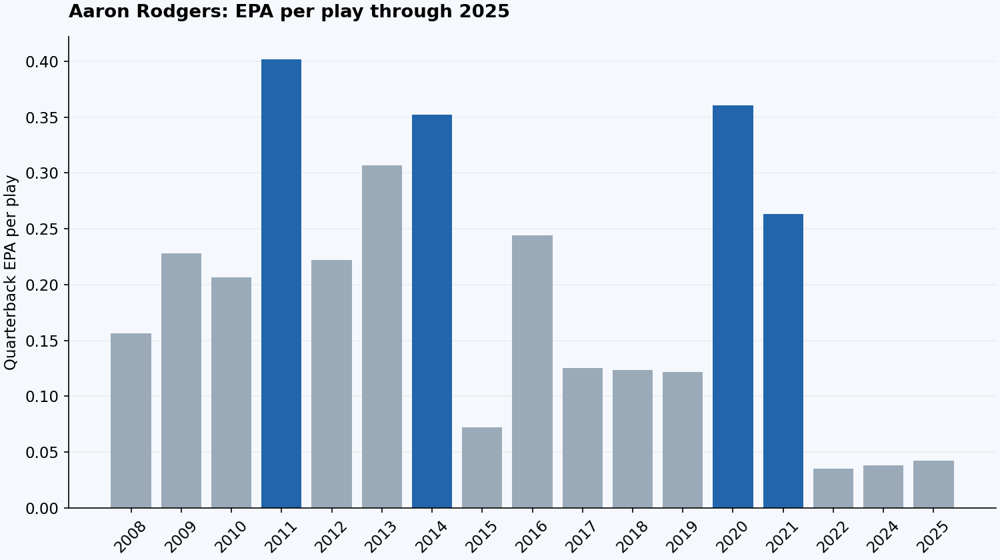
View chart values
| Quarterback | Season | EPA/play | EPA/play league rank | Total TD | Total TD league rank |
|---|---|---|---|---|---|
| Aaron Rodgers | 2008 | 0.156 | 8 | 32 | 3 |
| Aaron Rodgers | 2009 | 0.228 | 5 | 35 | 2 |
| Aaron Rodgers | 2010 | 0.207 | 4 | 32 | 4 |
| Aaron Rodgers | 2011 | 0.402 | 1 | 48 | 1 |
| Aaron Rodgers | 2012 | 0.222 | 5 | 41 | 2 |
| Aaron Rodgers | 2013 | 0.307 | 2 | 17 | T-23 |
| Aaron Rodgers | 2014 | 0.352 | 1 | 40 | 2 |
| Aaron Rodgers | 2015 | 0.072 | 17 | 32 | T-11 |
| Aaron Rodgers | 2016 | 0.244 | 4 | 44 | 1 |
| Aaron Rodgers | 2017 | 0.125 | 10 | 16 | T-27 |
| Aaron Rodgers | 2018 | 0.124 | 15 | 27 | T-14 |
| Aaron Rodgers | 2019 | 0.121 | 11 | 27 | T-11 |
| Aaron Rodgers | 2020 | 0.360 | 1 | 51 | 1 |
| Aaron Rodgers | 2021 | 0.263 | 1 | 40 | 5 |
| Aaron Rodgers | 2022 | 0.035 | 20 | 27 | 9 |
| Aaron Rodgers | 2024 | 0.038 | 20 | 28 | T-10 |
| Aaron Rodgers | 2025 | 0.042 | 23 | 25 | T-13 |
He steered the Packers to a league-leading 31.8 points per game, the second-highest scoring average of any team in the 2020s through the 2025 season, behind only the 2024 Lions. Rodgers also led the Packers to the 1st seed in the NFC for the first time since 2011. We don’t love passer rating, but he posted the second-highest qualifying regular-season passer rating, behind only his 2011 campaign. His special connection with Davante Adams was on full display this year as they linked up for a whopping 18 touchdowns. He was so good that he blew out two other worthy MVP candidates in voting. Final tally was Rodgers-44, Josh Allen-4, Patrick Mahomes-2. See below for the statistical comparison and how the three look relative to other MVPs.
| Quarterback | Season | Total EPA | EPA/play | EPA/play league rank | Total TD | Total TD league rank | Pass yards | INT | Team wins | Team PPG | Team PA/G | Off. EPA rank | Def. EPA rank |
|---|---|---|---|---|---|---|---|---|---|---|---|---|---|
| Aaron Rodgers | 2020 | 218.4 | 0.360 | 1 | 51 | 1 | 4,299 | 5 | 13 | 31.8 | 23.1 | 1 | 13 |
| Patrick Mahomes | 2020 | 199.8 | 0.289 | 3 | 40 | T-5 | 4,740 | 6 | 14 | 29.6 | 22.6 | 4 | 19 |
| Josh Allen | 2020 | 207.2 | 0.287 | 4 | 46 | 2 | 4,544 | 10 | 13 | 31.3 | 23.4 | 3 | 14 |
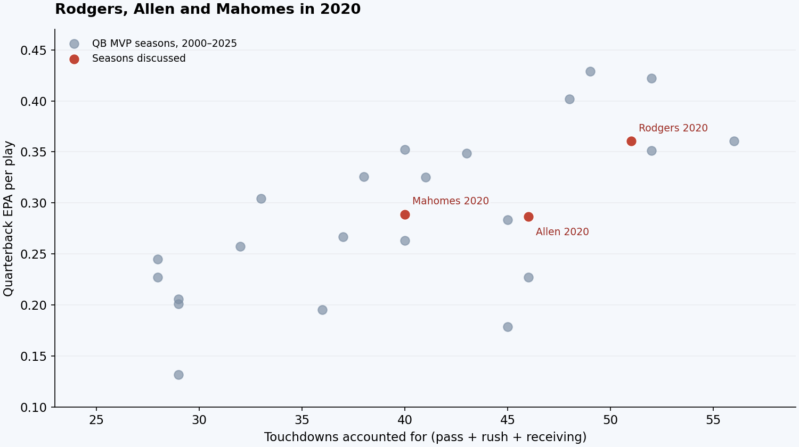
View highlighted seasons and values
| Quarterback | Season | EPA/play | EPA/play league rank | Total TD | Total TD league rank |
|---|---|---|---|---|---|
| Aaron Rodgers | 2020 | 0.360 | 1 | 51 | 1 |
| Josh Allen | 2020 | 0.287 | 4 | 46 | 2 |
| Patrick Mahomes | 2020 | 0.289 | 3 | 40 | T-5 |
It’s hard to overstate just how good Rodgers’ best seasons were, which makes the lack of NFC Championships he won all the more frustrating. This was a particularly frustrating year. After trailing 28-10 early in the 2nd half, Rodgers came roaring back with back-to-back touchdown drives to make it 28-23. Brady threw interceptions on three consecutive Tampa Bay possessions. Green Bay turned them into just six points, going three-and-out after each of the last two. After that pigfest, Tampa Bay added a field goal to make it 31-23, and Rodgers had the ball. He drove the Packers to the Tampa Bay 8-yard line, where the Coward-in-Chief Matt LaFleur chose to kick a field goal on 4th and goal rather than go for a touchdown and a potential game-tying two-point conversion. The Packers made it 31-26 on the field goal with 2:05 left and didn’t see the ball again. A sad ending to an all-time great season by Aaron Rodgers.
WHO SHOULD’VE WON · 2020Aaron Rodgers
Tier One: GOAT Level Seasons
5. Peyton Manning- 2004
It’s almost impossible how good this Colts offense was. They scored 32.6 points per game, the third-highest scoring average of any team in the 2000s, behind only the 2007 Patriots and 2000 Rams. Peyton had 49 touchdowns to 10 interceptions and won the MVP vote 47-1, with Michael Vick receiving the other vote on a 48-person panel. He broke Dan Marino’s single season passing touchdowns record, which had stood for 20 years, and he spread the wealth to such a degree that Marvin Harrison, Reggie Wayne and Brandon Stokley all topped 1,000 receiving yards and caught at least ten touchdowns. If it wasn’t clear already, this was the point at which it became abundantly clear Peyton Manning was the best regular-season player in the NFL. Sadly for him, the playoffs remained an issue. The high-powered Colts offense went into a snowy New England for the divisional round and mustered only 3 points as the Patriots went on to win their second consecutive Super Bowl. It would be a couple more seasons before Peyton exorcised that demon.
WHO SHOULD’VE WON · 2004Peyton Manning
4. Aaron Rodgers- 2011
This was the best season of Aaron Rodgers’ career. It ranks 4th in total EPA and third in EPA per play among qualifying quarterback seasons from 2000 through 2025. On the heels of winning the Super Bowl in 2010, Rodgers and the Packers started 13-0 on their way to a 15-1 season and the 1st seed in the NFC. The Packers averaged 35 points per game, which is fourth among team-seasons from 2000 through 2025, and they needed it because this defense was flat-out not good. They were 22nd in the league in defensive EPA per play and allowed 299.8 net passing yards per game. Rodgers threw at least seven touchdowns to four different receivers: Nelson, Jennings, Jones and Finley. Rodgers was so dominant he won MVP in a 48-2 voting landslide in a season in which Drew Brees and Tom Brady were unbelievable. See below for stat comparison and historical reference.
| Quarterback | Season | Total EPA | EPA/play | EPA/play league rank | Total TD | Total TD league rank | Pass yards | INT | Team wins | Team PPG | Team PA/G | Off. EPA rank | Def. EPA rank |
|---|---|---|---|---|---|---|---|---|---|---|---|---|---|
| Aaron Rodgers | 2011 | 241.4 | 0.402 | 1 | 48 | 1 | 4,643 | 6 | 15 | 35.0 | 22.4 | 1 | 22 |
| Drew Brees | 2011 | 223.3 | 0.309 | 2 | 47 | 2 | 5,476 | 14 | 13 | 34.2 | 21.2 | 2 | 15 |
| Tom Brady | 2011 | 216.2 | 0.306 | 3 | 42 | 3 | 5,235 | 12 | 13 | 32.1 | 21.4 | 3 | 30 |
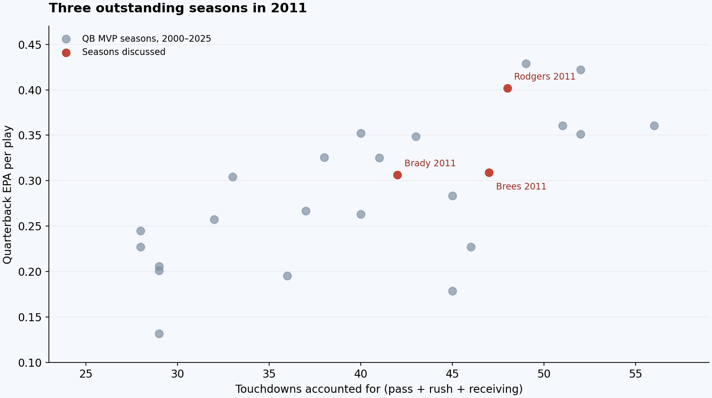
View highlighted seasons and values
| Quarterback | Season | EPA/play | EPA/play league rank | Total TD | Total TD league rank |
|---|---|---|---|---|---|
| Aaron Rodgers | 2011 | 0.402 | 1 | 48 | 1 |
| Drew Brees | 2011 | 0.309 | 2 | 47 | 2 |
| Tom Brady | 2011 | 0.306 | 3 | 42 | 3 |
Brady and Brees in 2011 were both outstanding in EPA per play and quarterbacked 13-3 teams. They were awesome. And Aaron Rodgers was so good it wasn’t even a particularly close vote for MVP. This season reminds us of our discussion about 2009 and even 2008. In this 2008-11 window we had Tom Brady, Peyton Manning, Drew Brees and Aaron Rodgers all playing at or near the peak of their powers. Not to mention the oft-forgotten Philip Rivers in his prime. Next time some broccoli-haired TikTok kid tries to tell you about how good this Mahomes-Allen-Lamar era of quarterbacking is, tell him to take a peek at 2011.
WHO SHOULD’VE WON · 2011Aaron Rodgers
3. Patrick Mahomes- 2018
This is quite possibly the most fun season on this list. We mentioned earlier how surprising Lamar’s 2019 MVP campaign was. We’re not sure if Mahomes’ 2018 was more surprising, but it’s close. There was skepticism as the Chiefs moved on from a very productive starter in Alex Smith going into Mahomes’ sophomore season, but he obliterated that skepticism in the first couple of weeks. In the first two games of the 2018 season, Mahomes threw for 10 touchdowns, and the Chiefs put up 80 points in two wins. His six touchdown passes against Pittsburgh came in his third career start. Absurd. Mahomes was up against an outstanding Drew Brees year as his competition and still ran away with the voting 41-9. He led the league in total EPA and total touchdowns and finished first in EPA per play, ahead of Drew Brees. In fact, his Total EPA, EPA per play, and total touchdowns all rank among the best seasons since 2000. The combination of volume and efficiency was surgical. And he did all of this while carrying a bottom-five defense. Through 2025, he is one of only three quarterbacks to throw at least 50 touchdown passes in a season, alongside Brady and Manning. And he did it in what was his debut year as an NFL starter. It was obvious pretty early this guy was special. The Chiefs secured the 1st seed in the AFC on the back of Mahomes and then went on to retire Andrew Luck in the divisional round. Luck literally never played again. He eventually lost in overtime of the AFC Championship to the Pats, but everyone knew he was going to be a serious problem going forward.
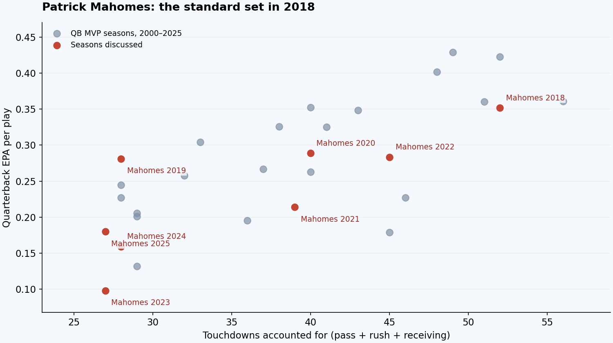
View highlighted seasons and values
| Quarterback | Season | EPA/play | EPA/play league rank | Total TD | Total TD league rank |
|---|---|---|---|---|---|
| Patrick Mahomes | 2018 | 0.352 | 1 | 52 | 1 |
| Patrick Mahomes | 2022 | 0.283 | 1 | 45 | 1 |
| Patrick Mahomes | 2019 | 0.281 | 2 | 28 | T-7 |
| Patrick Mahomes | 2020 | 0.289 | 3 | 40 | T-5 |
| Patrick Mahomes | 2021 | 0.214 | 2 | 39 | 6 |
| Patrick Mahomes | 2023 | 0.098 | 14 | 27 | 11 |
| Patrick Mahomes | 2024 | 0.159 | 11 | 28 | T-10 |
| Patrick Mahomes | 2025 | 0.180 | 8 | 27 | T-11 |
The graph puts his 2018 breakout next to every other qualifying season of his career through 2025. Even for Mahomes, that combination of touchdowns and efficiency was ridiculous. It also explains why watching the Chiefs struggle to recreate that offensive dominance can be so frustrating. The standard he set was that high.
WHO SHOULD’VE WON · 2018Patrick Mahomes
2. Peyton Manning- 2013
This year has a case for number one on the list. Peyton broke the record that Tom Brady set and Patrick Mahomes later tied of 50 passing touchdowns in a season. And he broke it by 5 touchdowns. He threw 55 touchdowns in 16 games. He finished 1st in Total EPA, 1st in EPA per play, and 1st in total touchdowns (obviously). Through 2025, the 2013 Broncos hold the Super Bowl-era records for total points (606) and points per game (37.9). Peyton threw seven touchdowns on opening night in a revenge game against the defending Super Bowl Champion Ravens and never looked back. This offense was so good they scored less than 30 points only three times the entire year. Peyton won the MVP in a 49-1 vote with one cowardly holdout voting for Tom Brady despite Brady throwing 30 fewer touchdown passes. Four different receivers caught at least ten touchdown passes from Peyton: Demaryius Thomas, Julius Thomas, Eric Decker and Wes Welker. Unfortunately for Peyton, they got blown out in the Super Bowl against Seattle, which is likely what people remember most about this team, but its legacy as the most prolific passing season in league history will endure.
In the chart below, we’ve highlighted Peyton’s 2013 year to highlight just how absurd it was, and added every non-MVP Peyton Manning season from 2003–2014. As you can see, every one of those dots is in the neighborhood of the MVP trend. He kept producing seasons that belonged in an MVP discussion (barring 2011 when he had the neck injury). It was a truly ridiculous level of consistency from an all-time great, and the 2013 season was his masterpiece.
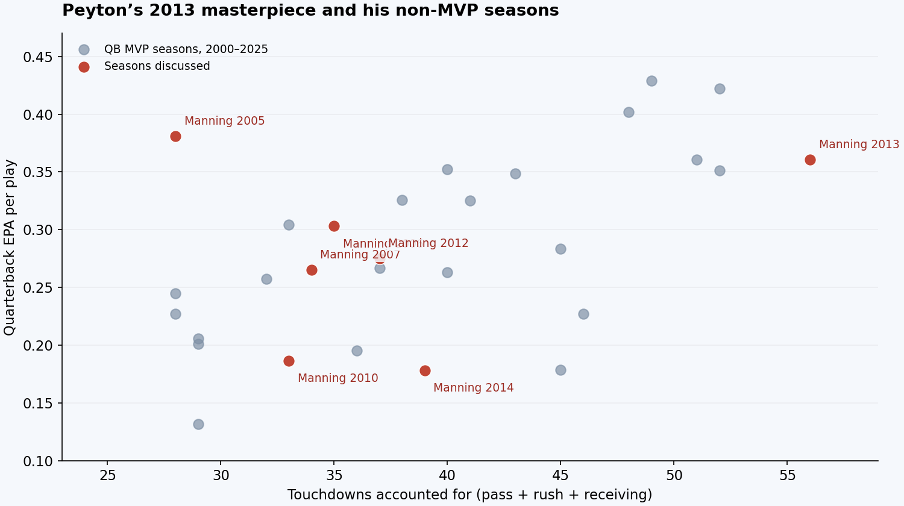
View highlighted seasons and values
| Quarterback | Season | EPA/play | EPA/play league rank | Total TD | Total TD league rank |
|---|---|---|---|---|---|
| Peyton Manning | 2013 | 0.361 | 1 | 56 | 1 |
| Peyton Manning | 2005 | 0.381 | 1 | 28 | 2 |
| Peyton Manning | 2006 | 0.303 | 1 | 35 | 1 |
| Peyton Manning | 2007 | 0.265 | 2 | 34 | T-3 |
| Peyton Manning | 2010 | 0.187 | 7 | 33 | T-2 |
| Peyton Manning | 2012 | 0.275 | 2 | 37 | 4 |
| Peyton Manning | 2014 | 0.178 | 5 | 39 | 3 |
WHO SHOULD’VE WON · 2013Peyton Manning
1. Tom Brady- 2007
Here he is. Thomas Edward Patrick Brady, Jr. Belichick acquired Randy Moss and Wes Welker in the offseason. Then Spygate broke in September 2007, and the Patriots spent the rest of the fall on the warpath. As we’re sure you’re aware, they completed the only 16-0 regular season in league history. They set the record for most points by a team in NFL history which would later be broken by Peyton Manning’s 2013 Broncos. Brady put up the highest total EPA in the database and the second-highest EPA per play, behind Peyton’s 2004 season. He won the MVP vote in a 49-1 rout with one reporter suffering from broken brain syndrome and voting for Brett Favre (Favre had 28 touchdowns and 15 interceptions to Brady’s 50 touchdowns and 8 interceptions). The Patriots won ten games by more than 20 points, an absurd run of blowouts. It was truly incredible to watch the Patriots offense lay waste to opponents this year. Brady couldn’t seal the deal, however. The New York Football Giants entered the Super Bowl as 12.5-point underdogs against the 18-0 Patriots and pulled off one of the greatest upsets of all time. It was the largest upset by spread in a Super Bowl since Brady’s own Pats beat the Rams as 14-point dogs after the 2001 season. Michael Strahan and co. had Brady in shambles all night as they sacked him five times. And so, the greatest MVP season of this century ended with a whimper.
WHO SHOULD’VE WON · 2007Tom Brady
Appendix:
Below you can view the top 20 seasons in Total EPA, EPA per play, Total Touchdowns, and Passing Yards since 2000
Total quarterback EPA
| Rank | Quarterback | Season | Total quarterback EPA |
|---|---|---|---|
| 1 | Tom Brady | 2007 | 275.9 |
| 2 | Peyton Manning | 2013 | 260.5 |
| 3 | Patrick Mahomes | 2018 | 243.6 |
| 4 | Aaron Rodgers | 2011 | 241.4 |
| 5 | Peyton Manning | 2004 | 240.8 |
| 6 | Drew Brees | 2011 | 223.3 |
| 7 | Aaron Rodgers | 2020 | 218.4 |
| 8 | Tom Brady | 2011 | 216.2 |
| 9 | Patrick Mahomes | 2022 | 216.2 |
| 10 | Aaron Rodgers | 2014 | 216.1 |
| 11 | Daunte Culpepper | 2004 | 210.2 |
| 12 | Tom Brady | 2012 | 208.9 |
| 13 | Lamar Jackson | 2019 | 208.1 |
| 14 | Josh Allen | 2020 | 207.2 |
| 15 | Josh Allen | 2024 | 206.1 |
| 16 | Lamar Jackson | 2024 | 204.1 |
| 17 | Matt Ryan | 2016 | 203.0 |
| 18 | Drake Maye | 2025 | 201.0 |
| 19 | Patrick Mahomes | 2020 | 199.8 |
| 20 | Peyton Manning | 2005 | 191.7 |
EPA per play
| Rank | Quarterback | Season | EPA per play | EPA/play league rank |
|---|---|---|---|---|
| 1 | Peyton Manning | 2004 | 0.429 | 1 |
| 2 | Tom Brady | 2007 | 0.422 | 1 |
| 3 | Aaron Rodgers | 2011 | 0.402 | 1 |
| 4 | Peyton Manning | 2005 | 0.381 | 1 |
| 5 | Peyton Manning | 2013 | 0.361 | 1 |
| 6 | Aaron Rodgers | 2020 | 0.360 | 1 |
| 7 | Aaron Rodgers | 2014 | 0.352 | 1 |
| 8 | Patrick Mahomes | 2018 | 0.352 | 1 |
| 9 | Lamar Jackson | 2019 | 0.349 | 1 |
| 10 | Drew Brees | 2018 | 0.335 | 2 |
| 11 | Philip Rivers | 2009 | 0.333 | 1 |
| 12 | Brock Purdy | 2023 | 0.333 | 1 |
| 13 | Matt Ryan | 2016 | 0.326 | 1 |
| 14 | Josh Allen | 2024 | 0.325 | 1 |
| 15 | Ryan Tannehill | 2020 | 0.325 | 2 |
| 16 | Drew Brees | 2004 | 0.319 | 2 |
| 17 | Tom Brady | 2016 | 0.317 | 2 |
| 18 | Lamar Jackson | 2024 | 0.315 | 2 |
| 19 | Drew Brees | 2011 | 0.309 | 2 |
| 20 | Drake Maye | 2025 | 0.307 | 1 |
Touchdowns accounted for
| Rank | Quarterback | Season | Touchdowns accounted for | Total TD league rank |
|---|---|---|---|---|
| 1 | Peyton Manning | 2013 | 56 | 1 |
| 2 | Tom Brady | 2007 | 52 | 1 |
| 2 | Patrick Mahomes | 2018 | 52 | 1 |
| 4 | Aaron Rodgers | 2020 | 51 | 1 |
| 5 | Peyton Manning | 2004 | 49 | 1 |
| 6 | Aaron Rodgers | 2011 | 48 | 1 |
| 7 | Drew Brees | 2011 | 47 | 2 |
| 8 | Josh Allen | 2020 | 46 | 2 |
| 8 | Matthew Stafford | 2025 | 46 | 1 |
| 10 | Cam Newton | 2015 | 45 | 1 |
| 10 | Tom Brady | 2021 | 45 | 1 |
| 10 | Patrick Mahomes | 2022 | 45 | 1 |
| 10 | Lamar Jackson | 2024 | 45 | T-1 |
| 10 | Joe Burrow | 2024 | 45 | T-1 |
| 15 | Drew Brees | 2012 | 44 | 1 |
| 15 | Aaron Rodgers | 2016 | 44 | 1 |
| 15 | Josh Allen | 2023 | 44 | 1 |
| 15 | Baker Mayfield | 2024 | 44 | 3 |
| 19 | Andrew Luck | 2014 | 43 | 1 |
| 19 | Lamar Jackson | 2019 | 43 | 1 |
Passing yards
| Rank | Quarterback | Season | Passing yards |
|---|---|---|---|
| 1 | Peyton Manning | 2013 | 5,477 |
| 2 | Drew Brees | 2011 | 5,476 |
| 3 | Tom Brady | 2021 | 5,316 |
| 4 | Patrick Mahomes | 2022 | 5,250 |
| 5 | Tom Brady | 2011 | 5,235 |
| 6 | Drew Brees | 2016 | 5,208 |
| 7 | Drew Brees | 2012 | 5,177 |
| 8 | Drew Brees | 2013 | 5,162 |
| 9 | Ben Roethlisberger | 2018 | 5,129 |
| 10 | Jameis Winston | 2019 | 5,109 |
| 11 | Patrick Mahomes | 2018 | 5,097 |
| 12 | Drew Brees | 2008 | 5,069 |
| 13 | Matthew Stafford | 2011 | 5,038 |
| 14 | Justin Herbert | 2021 | 5,014 |
| 15 | Matthew Stafford | 2012 | 4,967 |
| 16 | Drew Brees | 2014 | 4,952 |
| 16 | Ben Roethlisberger | 2014 | 4,952 |
| 18 | Matt Ryan | 2016 | 4,944 |
| 19 | Eli Manning | 2011 | 4,933 |
| 20 | Matt Ryan | 2018 | 4,924 |
Sources and methodology
This is a ranking of AP NFL MVP recipients from 2000 through 2025, including both 2003 co-winners. The order and preferred winners are opinions. All charts and comparison tables use the same EPA definition. Values may differ from providers using different filters.
Conventional passing totals were reconciled with the NFL’s published season leaderboards; rushing and receiving totals for the quarterbacks featured in the charts and tables were checked against official career records. EPA remains a calculation from the released nflverse play-by-play, which can differ from official box-score totals and other EPA providers. These sources measure different things; a box-score correction is not applied mechanically to EPA.
Quarterback EPA uses the shared nfelo-compatible-v1 calculation: sum raw nflfastR epa on regular-season plays with pass = 1 or a non-aborted rush_attempt = 1, a recorded down, nonmissing EPA and a player id belonging to a quarterback. Kneels, spikes and two-point attempts are excluded. This includes sacks, scrambles, designed QB runs and eligible penalty plays. Raw EPA retains receiver-fumble outcomes; it is not the receiver-fumble-adjusted qb_epa field. EPA/play divides total EPA by these same plays. Success rate is the percentage with epa > 0. Rate comparisons and appendix lists require at least 300 eligible plays per season. Ties share a rank. The same calculation powers our Maye and Allen–Jackson articles; five benchmark season totals reproduce nfelo within game-log rounding. Provider leaderboards can use different qualifying thresholds.
Team offensive and defensive EPA use raw play EPA on the same eligible play set, grouped by possession and defensive team. Defensive ranks run from lowest EPA allowed to highest. Team points per game include defense and special teams, so scoring rank and offensive EPA rank measure different things. Total touchdowns means passing plus rushing plus receiving touchdowns accounted for; it is not the NFL’s touchdowns-scored leaderboard. Seasons remain at their original length. No 16-to-17-game prorating is applied.
The 2025 schedule comparison uses opponents’ final regular-season win percentage, counting each scheduled matchup and counting ties as half a win. It includes games against the candidate’s own team. It is an overall opponent-strength proxy, not defensive strength or an adjustment to EPA. MVP ballots were submitted before the playoffs.
- nflverse play-by-play data and nflfastR field documentation
- nflverse player season statistics and game results
- 2025 official team statistics: Rams, Patriots, Bills
- AP’s 2025 MVP result and 2025 conference standings
- Historical corrections: Super Bowl XXXVI, 2002 Raiders seed, Watt statistics, Bills’ Hamlin update, Tomlinson’s scoring record.
Download the data
Historical voting and narrative sources
- Voting: 2001
- Voting: 2003
- Voting: 2004
- Voting: 2005
- Voting: 2007
- Voting: 2008
- Voting: 2009
- Voting: 2010
- Voting: 2011
- Voting: 2013
- Voting: 2016
- Voting: 2018
- Voting: 2019
- Voting: 2020
- Voting: 2021
- Voting: 2023
- Seattle’s 2005 All-Pros
- Peterson’s final four games
- Peterson’s injury and comeback
- Faulk’s career production
- Manning’s 2008 game-winning drives
- Ertz’s Super Bowl touchdown matchup
- 2020 NFC Championship sequence
- Rodgers’ 2020 records
- Flynn’s 2011 finale and TD recipients
- Mahomes’ first two 2018 starts
- 2013 Denver scoring records
- Moss trade
- Welker trade
- Philip Rivers: official Chargers career statistical record
Coverage check: the released 2000 play-by-play is missing Chargers–Chiefs in Week 3 and Bills–Dolphins in Week 6. Regular-season game coverage is complete from 2001–2025 against the schedule file. None of the quarterback MVP-winning seasons or top-20 EPA/EPA-per-play entries shown here comes from the affected 2000 seasons. The 2000 comparison in Gannon’s prose refers to the available plays; no EPA was invented for missing games.
League-rank columns compare each quarterback with the quarterbacks in his own regular season. EPA/play ranks require at least 300 eligible plays; total-TD ranks use passing, rushing and receiving touchdowns accounted for. T- indicates tied ranks. In the historical appendices, the first Rank column compares seasons across 2000–2025, while the separately labeled league-rank column compares quarterbacks within the listed season.